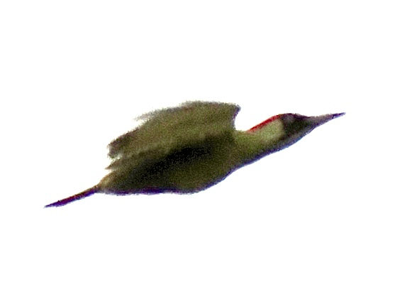

Eurasian Green Woodpecker
Picus viridis
Order: Piciformes
Family: Picidae

A green woodpecker with a pale face and belly and red cap. Face has a black mask around the eyes and a moustachial stripe that is red in males and black in females. Found clung to the side of trees, or on the ground looking for ants. Known as the yaffle for their laughing call.